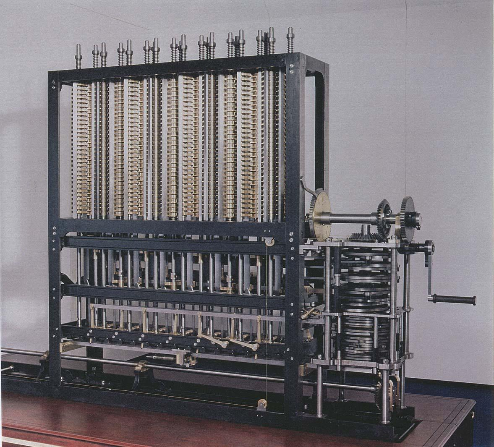
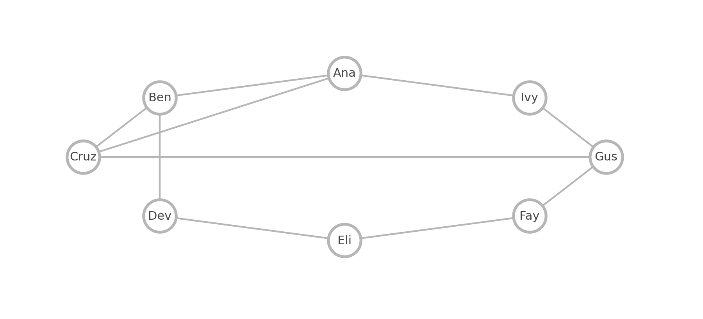
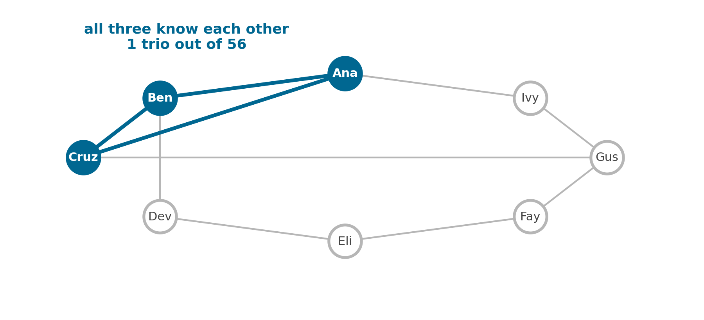
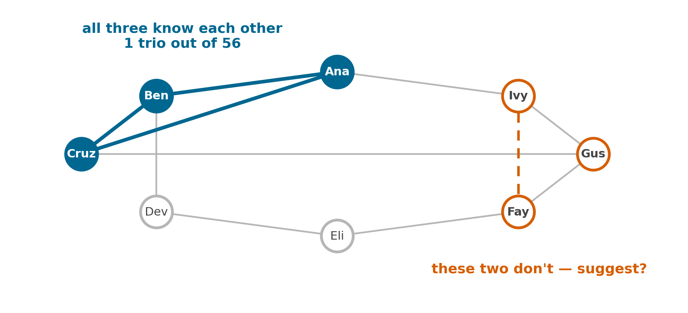
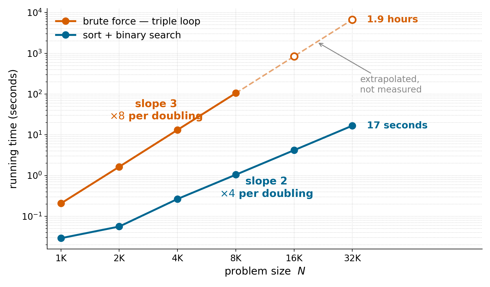
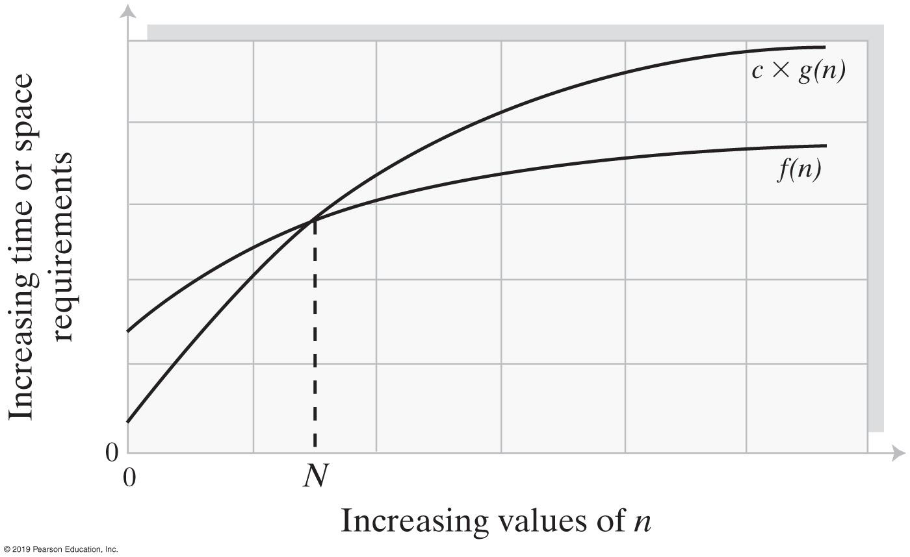
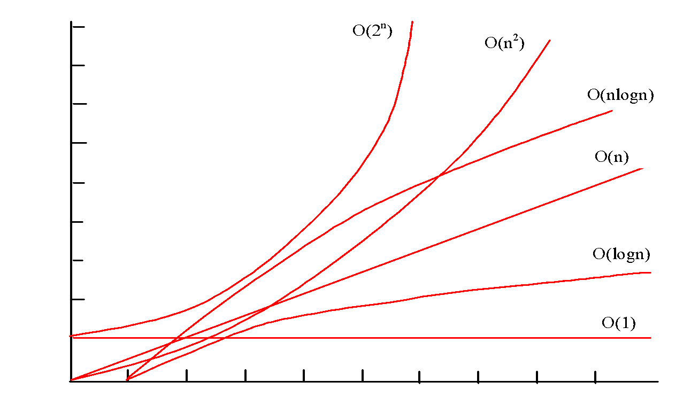
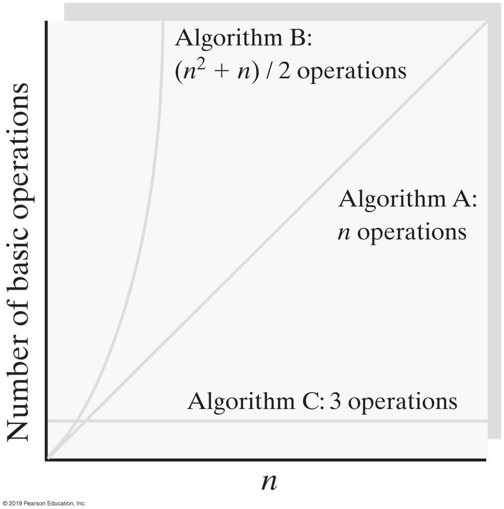

The Efficiency of Algorithms
I am thinking of a whole number between \(1\) and \(1{,}000{,}000\).
How many guesses do you need to be certain — no luck involved?
Each guess throws away half of what is left.
\[1{,}000{,}000 \;\to\; 500{,}000 \;\to\; 250{,}000 \;\to\; \cdots \;\to\; 1\]
Twenty halvings is enough, because \(2^{20} = 1{,}048{,}576\).
| If I pick from | You need |
|---|---|
| \(1\) to \(1{,}000\) | \(10\) guesses |
| \(1\) to \(1{,}000{,}000\) | \(20\) guesses |
| \(1\) to \(1{,}000{,}000{,}000\) | \(30\) guesses |
A thousand times the haystack costs you ten more guesses.
Some algorithms behave like the guessing game — a thousand times the problem costs ten more steps. That is the good case.
Others are the opposite. Doubling the input multiplies the work, and a few doublings later the program stops finishing at all.
Today: how to tell which one you wrote, before you ship it.
As soon as an Analytic Engine exists, it will necessarily guide the future course of the science. Whenever any result is sought by its aid, the question will arise — by what course of calculation can these results be arrived at by the machine in the shortest time?
— Charles Babbage, 1864

How many times do you have to turn the crank?
Measure
Given \(N\) distinct integers, how many triples sum to exactly zero?
| 30 | −40 | −20 | −10 | 40 | 0 | 10 | 5 | |
| 30 | −40 | −20 | −10 | 40 | 0 | 10 | 5 | 30 − 40 + 10 = 0 |
| 30 | −40 | −20 | −10 | 40 | 0 | 10 | 5 | 30 − 20 − 10 = 0 |
| 30 | −40 | −20 | −10 | 40 | 0 | 10 | 5 | −40 + 40 + 0 = 0 |
| 30 | −40 | −20 | −10 | 40 | 0 | 10 | 5 | −10 + 0 + 10 = 0 |
Find them. Eight numbers, three at a time.
You just did it by eye for \(8\) numbers.
How many triples did you have to check?
\[\binom{8}{3} = \frac{8 \cdot 7 \cdot 6}{6} = 56\]
| Problem | Things to check |
|---|---|
| 1-Sum — is there a zero? | \(N\) |
| 2-Sum — does a pair sum to zero? | \(\binom{N}{2} \approx N^2/2\) |
| 3-Sum — does a triple sum to zero? | \(\binom{N}{3} \approx N^3/6\) |
For \(N = 8{,}000\) the count is
\[\binom{8000}{3} = 85{,}301{,}336{,}000 \;\approx\; 8.5 \times 10^{10} .\]
Eighty-five billion triples. Hold on to that number — we are about to find out what it costs.
Your phone suggests people you might know. This is one way it decides.
Which three of them all know each other?



Counting trios is the same triple loop, on data you already carry around.
| Network | Trios to check | Time\(^\dagger\) |
|---|---|---|
| your \(8\) friends | \(56\) | instant |
| a \(1{,}000\)-person club | \(1.7 \times 10^{8}\) | \(0.2\) s |
| a \(10{,}000\)-student campus | \(1.7 \times 10^{11}\) | \(3.4\) min |
| a \(100{,}000\)-user app | \(1.7 \times 10^{14}\) | \(2.4\) days |
\(^\dagger\) at the \(1.2\) ns per triple our own brute force measured.
Ten times the users, a thousand times the work.
It is obviously correct. Is it fast enough?
We run it and time it. On my laptop, \(N = 1{,}000\) takes \(0.21\) seconds.
Now I double the input. How long does \(N = 2{,}000\) take?
Commit to an answer before I hit enter.
| \(0.4\) s | \(0.8\) s | \(1.6\) s | longer |
| N | seconds | ratio |
|---|---|---|
| 500 | 0.03 | — |
| 1,000 | 0.21 | 6.9 |
| 2,000 | 1.64 | 7.9 |
| 4,000 | 13.21 | 8.0 |
| 8,000 | 105.33 | 8.0 |
Doubling the input does not double the time. It multiplies it by \(8\) — every single time.
\[\frac{T(2N)}{T(N)} \;=\; \frac{a\,(2N)^b}{a\,N^b} \;=\; 2^b\]
So \(2^b = 8\), which gives \(b = 3\):
\[T(N) \;\approx\; a\,N^3\]
Look again at the ratio column: \(6.9\), then \(7.9\), then \(8.0\), \(8.0\). The sort-and-search race is worse — \(1.9\), \(4.8\), \(3.9\), \(4.0\), \(4.0\).
The early rows are not measuring the algorithm.
At \(N = 500\) the whole run takes \(0.03\) seconds.
The ratios converge. Take \(b\) from where they settle, not from the first row.
The doubling hypothesis is a claim about large \(N\) — small \(N\) is where the machine, not the algorithm, is doing the talking.
And if they never settle? Then it is not a power law, and the method does not apply.
We never measured \(N = 16{,}000\). We do not have to.
\[105 \text{ s} \times 8 \;=\; 842 \text{ s} \;\approx\; 14 \text{ minutes}\]
And \(N = 32{,}000\) is another \(\times 8\): about \(1.9\) hours.
We are not going to sit here for it. That is the point — the measurement at \(N \le 8{,}000\) already told us.

On log-log axes, \(T(N) = a N^b\) is a straight line of slope \(b\).
The constant \(a\)
Depends on my laptop, my compiler, my JVM, what else was running.
Yours will differ.
The exponent \(b\)
Depends on the algorithm. Nothing else.
Yours will be \(3\) too.
This is why we compare algorithms with big O and not with stopwatches.
Name It
Keep the term that wins as \(n\) grows. Throw away everything else.
\[f(n) = n^2 + 100n + \log_{10} n + 1{,}000 \;=\; O(n^2)\]
\(f(n)\) is \(O(g(n))\) when there are positive constants \(c\) and \(N\) with
\[f(n) \le c \cdot g(n) \quad \text{for all } n \ge N .\]
In words: past some point, \(g\) is an upper bound on \(f\), up to a constant factor.

We use it to compare. Proving a bound straight from the definition is work for an algorithms course.
| Order | Name | What it looks like | \(T(2N)/T(N)\) |
|---|---|---|---|
| \(1\) | constant | a statement | \(1\) |
| \(\log n\) | logarithmic | halve each step | \(\approx 1\) |
| \(n\) | linear | one loop | \(2\) |
| \(n \log n\) | linearithmic | divide and conquer | \(\approx 2\) |
| \(n^2\) | quadratic | double loop | \(4\) |
| \(n^3\) | cubic | triple loop | \(8\) |
| \(2^n\) | exponential | try every subset | \(T(N)\) |
The last column is the one we just measured.
\[O(1) < O(\log n) < O(n) < O(n \log n) < O(n^2) < O(n^3) < O(2^n)\]

What is the order of growth of
\[f(n) = 5n^2 + 2^n + 10n \;?\]
\(O(2^n)\) — the exponential term beats every polynomial term, no matter how large the polynomial’s coefficients are.
Compare
The triple loop asks: for every \(i\), \(j\), \(k\) — do they sum to zero?
Turn it around. Pick a pair \(a_i, a_j\). The third number is forced:
\[a_k = -(a_i + a_j)\]
So we do not need a third loop. We need to look up whether that number is in the array.
Sort the array first. Then finding a number in it is exactly what we played at the start of class.
Binary search on \(N\) sorted items: at most \(1 + \lfloor \log_2 N \rfloor\) comparisons.
| Sorted array of | Comparisons |
|---|---|
| \(1{,}000\) items | \(10\) |
| \(1{,}000{,}000\) items | \(20\) |
| \(1{,}000{,}000{,}000\) items | \(30\) |
The same three numbers we started with.
Sorted array of \(15\). Find \(33\). Compare against the middle, throw away half.
| 0 | 1 | 2 | 3 | 4 | 5 | 6 | 7 | 8 | 9 | 10 | 11 | 12 | 13 | 14 | |
| 6 | 13 | 14 | 25 | 33 | 43 | 51 | 53 | 64 | 72 | 84 | 93 | 95 | 96 | 97 | |
| 6 | 13 | 14 | 25 | 33 | 43 | 51 | 53 | 64 | 72 | 84 | 93 | 95 | 96 | 97 | 33 < 53 → go left |
| 6 | 13 | 14 | 25 | 33 | 43 | 51 | 53 | 64 | 72 | 84 | 93 | 95 | 96 | 97 | 33 > 25 → go right |
| 6 | 13 | 14 | 25 | 33 | 43 | 51 | 53 | 64 | 72 | 84 | 93 | 95 | 96 | 97 | 33 < 43 → go left |
| 6 | 13 | 14 | 25 | 33 | 43 | 51 | 53 | 64 | 72 | 84 | 93 | 95 | 96 | 97 | 33 = 33 → found |
Four comparisons, and \(1 + \lfloor \log_2 15 \rfloor = 4\).
First published in \(1946\). First correct one published in \(1962\). A bug in Java’s own Arrays.binarySearch() was found in \(2006\).
| Step | Cost |
|---|---|
| Sort once | \(N \log N\) |
| Every pair \((i,j)\) | \(N^2\) pairs |
| Binary search per pair | \(\log N\) each |
| Total | \(N^2 \log N\) |
Race two: same problem, same machine, same language. Fill in the ratio column.
| N | seconds | ratio |
|---|---|---|
| 1,000 | 0.029 | — |
| 2,000 | 0.056 | 1.9 |
| 4,000 | 0.266 | 4.8 |
| 8,000 | 1.048 | 3.9 |
| 16,000 | 4.185 | 4.0 |
| 32,000 | 16.755 | 4.0 |
Ratio \(4 = 2^2\), so the order of growth is \(N^2\).
We derived \(N^2\) from the ratios. We predicted \(N^2 \log N\) from the code.
Both are right. Between \(N = 16{,}000\) and \(N = 32{,}000\) the \(\log N\) factor grows from \(14\) to \(15\) — a \(7\%\) change, buried in measurement noise.
Doubling cannot see logarithmic factors. Use the code to find them.
| \(N\) | brute force | sort + binary search | speedup |
|---|---|---|---|
| \(1{,}000\) | \(0.21\) s | \(0.029\) s | \(7\times\) |
| \(2{,}000\) | \(1.64\) s | \(0.056\) s | \(29\times\) |
| \(4{,}000\) | \(13.21\) s | \(0.266\) s | \(50\times\) |
| \(8{,}000\) | \(105.33\) s | \(1.048\) s | \(100\times\) |
| \(16{,}000\) | \(\approx 14\) min\(^\dagger\) | \(4.185\) s | \(201\times\) |
| \(32{,}000\) | \(\approx 1.9\) hr\(^\dagger\) | \(16.755\) s | \(402\times\) |
\(^\dagger\) predicted from the doubling hypothesis, not measured.
Same problem. Same machine. Same language. Same answer — both count \(500{,}153\) triples at \(N = 8{,}000\).
\(1.9\) hours versus \(17\) seconds.
Nobody bought a faster computer. Somebody picked a better order of growth.
A better order of growth beats a faster machine, and the gap widens with every doubling.
The measured gap at \(N = 32{,}000\) is \(402\times\). Extend both curves to \(N = 64{,}000\) and it projects to about \(800\times\).
The same algorithm can cost different amounts on different inputs.
Which of these does a customer care about?
Fill in the table.
| brute-force 3-Sum | binary search | |
|---|---|---|
| Best | ~ N³/6 | 1 |
| Average | ~ N³/6 | ~ log N |
| Worst | ~ N³/6 | ~ log N |
The triple loop cannot stop early — it runs every triple no matter what. Binary search can get lucky on the very first compare.
Now You Do It
Order of growth for each? Which would you ship?
A basic operation is the largest contributor to total running time.
| A | B | C | |
|---|---|---|---|
| Additions | \(n\) | \(n(n+1)/2\) | \(1\) |
| Multiplications | \(0\) | \(0\) | \(1\) |
| Divisions | \(0\) | \(0\) | \(1\) |
| Total | \(n\) | \((n^2+n)/2\) | \(3\) |
| Order of growth | \(O(n)\) | \(O(n^2)\) | \(O(1)\) |

Basic operations as a function of \(n\).
Algorithm C is \(O(1)\): it does the same three operations whether \(n = 10\) or \(n = 10^{12}\).
At a billion basic operations per second:
| Algorithm | Input it can finish in a day |
|---|---|
| \(O(n)\) | \(n \approx 9 \times 10^{13}\) |
| \(O(n^2)\) | \(n \approx 9 \times 10^{6}\) |
| \(O(n^3)\) | \(n \approx 44{,}000\) |
| \(O(2^n)\) | \(n \approx 46\) |
| \(O(n!)\) | \(n \approx 16\) |
An \(O(2^n)\) algorithm on \(60\) items runs for \(36\) years.
Next: the data structures that let you pick the better order of growth in the first place.
CSCI 2336 Data Structures